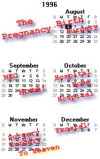

Click on an area of the map to read
about that period of time in Alex's life:

August 1996
September 1996
October 1996
Sat Oct 12th
Alex again returned home!, he is doing well although the doctor's could not determine exactly
what the cause of his difficulties was.
Sun Oct 19th
Alex's Dedication at Raleigh Mennonite Church
Mon Oct 21th
Alex returned to DUMC for signs of fever, high respiratory rate.
Sat Oct 26th
After being treated with antibiotics and running several tests, the cause is
still unknown, however, Alex is doing well and has returned home.
Wed Oct 30th
Alex returned to DUMC for observation in the Intensive Care Unit for a fever,
high heart rate, and high respiratory rate. Cause of problems, and expected length of stay unknown.
November 1996
Tue Nov 12th
After being unable to determine the cause of the intermittent fevers and other mysterious
problems, the
doctors determined that we should move Alex's second surgery (Glenn Shunt (Hemi-Fontan)) from
January '97 to now.
The surgery began today at around 8am. The first hour or two of the surgery was to placate his right
diaphram, to
allow the lungs to expand fully. They then began the shunt procedure. The surgery was very
complicated and lasted
much longer than expected. There were many problems with taking him off of the operating room
by-pass machine. After
several attempts, he was able to come back to PICU. Once in PICU, other complications arose and
his heart stopped for a
moment. After reviving him, they made the determination to place him on ECMO (Heart/Lung by-
pass machine). The cause of
the difficulties is not yet known.
Mon Nov 18th
A Heart Cath. was done today and showed that the problems in the previous surgery was due
to a narrowing in the SVC. The
surgeons determined that it was something which they could repair and prepared him for surgery
that afternoon. This surgery
began at around 6:30pm today. This procedure again was very difficult. Alex again had problems
with coming off of the by-pass
machine. The surgeons tried several times to fix the narrowing, however, even after repairing things
still were not working properly.
Alex was again brought back to PICU on the ECMO machine. Again exact cause, unknown.
Tue Nov 19th
An Angiogram was done today and found that the SVC and both PA's were collapsing due to
lack of venus pressure, compression from the
patches and sutures from the previous surgeries, and from the aorta twisting and lying on those
vessels. The surgeons determined that the
next step should be to add stents into the SVC and each of the PA's (three total stents). This should
allow the vessels to remain open and
allow the blood to flow freely into the lungs. This procedure is still very new, and is high risk due to
the fresh patches and sutures which
the stents could tear apart. The procedure was set up for the operating room rather than the cath
lab, and scheduled for early this Friday, the
22nd.
Fri Nov 22nd
Alex was again taken to the operating room to have the stents placed. The doctor's decided
to place a stent at the bottom of the SVC, and two in the right PA. The length and placement of the
left PA make it difficult to place a stent in the left side, also current angiograms showed blood flowing
in the left. The operation went by with no complications and the stents seem to be doing what was
expected. We will need to wait, however, to see if the blood will flow through now that they are
open.
Mon Nov 25th
We tried to cycle Alex off of the ECMO machine, he his own down to about half flow (machine
doing about half of the work for him), however, when the machine was clamped off to allow Alex to
do it all on his own, his oxygenation numbers dropped very quickly to an unacceptable level. We
had to again return to ECMO for life support. The doctors decided to keep the respirator at full
volume, and add Nitric Oxide for 12 hours to assist the lungs with recovery.
Tue Nov 26th
We tried again today to remove Alex from the ECMO, the results were slightly better than
yesterday, however, was still way below acceptable. We stopped the Nitric Oxide for now, but will
turn it on again about 12 hours before our next attempt at cycling him off ECMO. The doctor's all
agreed that he reacted somewhat better, but, the possibility of the blood just not flowing to the lungs
was getting even more real.
Wed Nov 27th
10:00am: We decided to slowly begin cycling down the ECMO machine, the flow (or
the
amount of assistance the machine was giving) would be turned down slightly every 15min until it was
at half flow. After a few minutes, the surgeon decided it would probably be beneficial to take
another angiogram to make sure that the blood was flowing to the lungs before any attempt to cycle
down was made.
11:00am: The surgeon and cardiologist did an angiogram. We shot a picture while still on
ECMO
and then one with ECMO clamped off. It would be a while till we knew what we would see, so the
ECMO was again turned to full flow.
12:00pm: The surgeon came to us and showed us the pictures from the angiogram. The
showed a
very obvious problem. There was NO blood flow to the left now. This was very odd due to the
earlier pictures which showed what seemed to be sufficient flow to the left. It was obvious that
there was no way that Alex could live with this occuring. The decision was made to have the
surgeon and a cardiologist place another stent, this time in the left side. They set it up to be done
this time right in the PICU bed rather than transferring to the operating room again. We did not want
to move him that much again. It was scheduled for 2pm.
2:00pm: After sitting with Alex for the past couple of hours, it was finally time to try the
additional
stent. The surgeon and the operating room technicians and equipment had arrived and it was time
to leave. I had a little talk with Alex and I told him that I was very proud of him for all that he has
done. I asked him to be strong for just a while longer, that we would try this and that it would then
be up to him. He would need to tell us then, what should be done.
3:30pm: We all sat anxiously and felt a great deal discouragement, although we still had a
glimmer
of hope to hold on to...
The surgeon came out and asked to speak with us privately. We knew right away that it was not
going to be great news. The stent was placed on the left side without any problems, they went
ahead and shot another angiogram, which showed no improvement. While the operating room and
all the doctors were present they had decided to again try to cycle down from the ECMO. The
results again were very bad. We were now faced with two clear facts; the blood simply was not
flowing to the lungs and the surgeons have done all that can be done. A decision had to be made.
We asked the surgeon to clean up Alex and his bed space from the surgery and allow us some time
alone with him. We knew then that this would be the last time we would have the chance to visit
with him.
4:30pm: We were finally able to go and visit with him, it was by far the most difficult part of
this
whole time to this point. We sat with him, we touched him, we prayed with him, and we cried with
him. I again had a talk with him, and although he was as sedated as he was, I still feel that he knew
what was going on. I asked him what we should do... As I talked with him, I noticed that his eyes
had opened ever so slightly, and a tear came out of the corner of his left eye, then he slowly closed
his eye again. He looked so tired and it was obvious that everything that could be done was done.
Alex had fought as much as he could fight, and Janine and I had to ask that Alex be removed from
the ECMO and allowed to rest finally.
5:15pm: We asked the doctors to take care of removing all of the equipment and once
that was
done, to allow us to come in and hold him one last time. We understood that he would pass on just
moments after being removed from the equipment, and that this was the last time we would be with
him while he was still alive.
5:30pm: We were called back in to PICU where they had opened a separate room to
allow Janine
and I privacy to sit with and hold Alex. There are no words to describe our feelings while with him
during this time. He looked so peaceful and although we were heartbroken that he was now gone,
we found comfort in the fact that he was now able to rest, and was in a much better place. We sat
with him in our arms for several minutes, then as we could not stand our own pain any longer, we
left.
6:00pm: After talking and crying with all of the doctors and nurses who had been such a
part of our
lives for the last four months, we left the hospital. We did not have any idea, nor did we want to
think about, "What Now?"....
December 1996